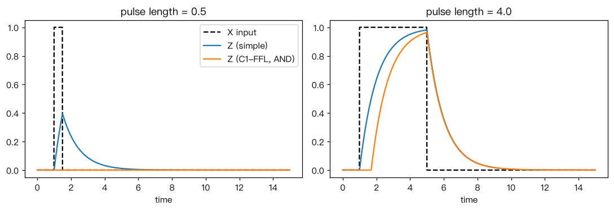
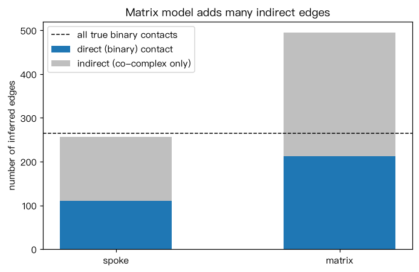
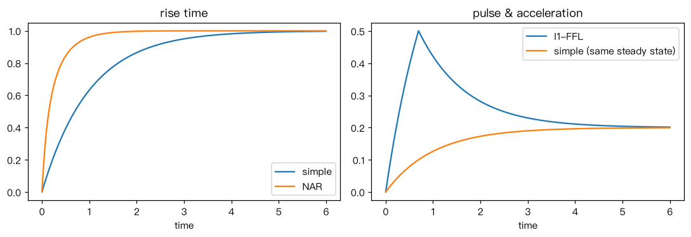

随机网络中标度律的涌现
Emergence of scaling in random networks
Barabási A-L, Albert R
报告多个真实网络的度分布尾部近似幂律，并提出“增长 + 优先连接”模型，用平均场方法推出指数 γ=3。
相关专题：小世界与无标度网络模型 生物分子网络与拓扑特征
蛋白质相互作用、转录调控与共表达网络，网络基序、WGCNA、网络推断方法与功能分析。
Biomolecular networks and their topology
蛋白相互作用、转录调控、代谢与信号网络的数据来源、拓扑、枢纽与必需性、复合物、网络基序、差异网络与多组学整合
Gene network inference and co-expression
从表达数据推断基因网络：共表达与 WGCNA、偏相关、互信息、回归、贝叶斯网络与动力学模型，以及推断结果的评估与局限
 重尾度分布与 Jeong 式统计生物分子网络与拓扑特征
重尾度分布与 Jeong 式统计生物分子网络与拓扑特征 删除枢纽与随机删除对巨连通分支的影响生物分子网络与拓扑特征
删除枢纽与随机删除对巨连通分支的影响生物分子网络与拓扑特征 前馈环计数与保持入度/出度的随机化零模型（网络基序 Z 分数）生物分子网络与拓扑特征
前馈环计数与保持入度/出度的随机化零模型（网络基序 Z 分数）生物分子网络与拓扑特征
一致型 1 型前馈环（与门）的持续性检测生物分子网络与拓扑特征
AP-MS 拉下数据的 spoke 模型与 matrix 模型生物分子网络与拓扑特征 互作组补全——共同邻居（L2）与长度为 3 的路径（L3）链路预测生物分子网络与拓扑特征
互作组补全——共同邻居（L2）与长度为 3 的路径（L3）链路预测生物分子网络与拓扑特征 通量平衡分析（FBA）与反应敲除生物分子网络与拓扑特征
通量平衡分析（FBA）与反应敲除生物分子网络与拓扑特征
负自调控加快响应；不一致型 1 型前馈环产生脉冲并加速生物分子网络与拓扑特征Emergence of scaling in random networks
Barabási A-L, Albert R
报告多个真实网络的度分布尾部近似幂律，并提出“增长 + 优先连接”模型，用平均场方法推出指数 γ=3。
Lethality and centrality in protein networks
Jeong H, Mason SP, Barabási A-L, Oltvai ZN
在酵母蛋白质相互作用网络中发现度分布重尾，且度越高的蛋白敲除后越可能致死，提出“致死性–中心性”关系。
Network motifs: simple building blocks of complex networks
Milo R, Shen-Orr S, Itzkovitz S, Kashtan N, Chklovskii D, Alon U
把“在真实网络中出现次数显著多于随机网络的小子图”定义为网络基序，发现不同领域的网络各有特征性基序。
Network motifs in the transcriptional regulation network of Escherichia coli
Shen-Orr SS, Milo R, Mangan S, Alon U
在大肠杆菌转录调控网络中发现前馈环、单输入模块、密集重叠调控子三类富集基序。
Evidence for dynamically organized modularity in the yeast protein–protein interaction network
Han J-DJ, Bertin N, Hao T, Goldberg DS, Berriz GF, Zhang LV, et al.
结合共表达把酵母互作组枢纽分为 party hub 与 date hub，提出动态组织的模块性。
A general framework for weighted gene co-expression network analysis
Zhang B, Horvath S
提出用“软阈值”把基因间相关转为连续连接权重，构建加权共表达网络，并把连接度、拓扑重叠、聚集系数推广到加权情形。
The human disease network
Goh K-I, Cusick ME, Valle D, Childs B, Vidal M, Barabási A-L
用 OMIM 疾病–基因关联构建疾病网络，发现疾病共享遗传根源、按类别聚集，多数遗传病基因位于网络外围。
Network medicine: a network-based approach to human disease
Barabási A-L, Gulbahce N, Loscalzo J
纲领性综述：疾病很少源于单个基因，而是细胞分子网络的扰动；系统梳理网络医学的核心假设、疾病基因预测方法与疾病间关系网络。
Wisdom of crowds for robust gene network inference
Marbach D, Costello JC, Küffner R, Vega NM, Prill RJ, Camacho DM, et al.; DREAM5 Consortium
DREAM5 挑战对 35 种网络推断方法做盲评，发现没有单一方法始终最优，而整合多种方法的“社区网络”最稳健。
Uncovering disease-disease relationships through the incomplete interactome
Menche J, Sharma A, Kitsak M, Ghiassian SD, Vidal M, Loscalzo J, et al.
给出不完整互作组中疾病模块可被观测的条件，提出网络分离度，用以预测疾病间的生物与临床相似性。
Network-based in silico drug efficacy screening
Guney E, Menche J, Vidal M, Barabási A-L
提出校正度偏倚的药物–疾病网络邻近度，发现有效药物的靶点更靠近疾病基因。
Cancer-keeper genes as therapeutic targets
Zhang X, Pan C, Wei X, Yu M, Liu S, An J, et al.
提出在所有控制方案中都处于控制路径中间的控制枢纽，用作癌症维持基因，并在膀胱癌细胞和小鼠模型中检验部分候选。
Synaptic organization in shared receivers predicts connectivity between input neurons
Zhang X
在两个成年果蝇连接组中，相连输入源的突触在共同接收神经元上靠得更近，这种空间信息可帮助预测未见过的输入神经元之间的连接。